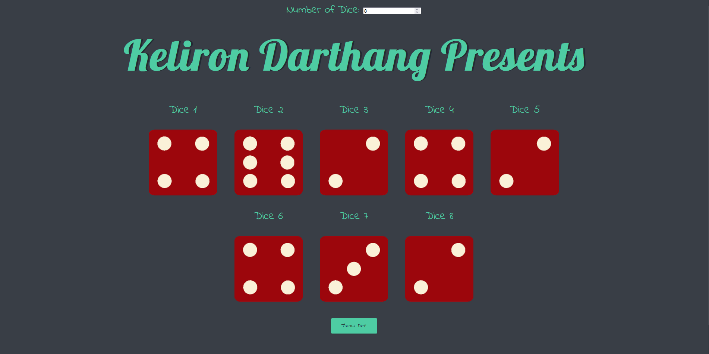
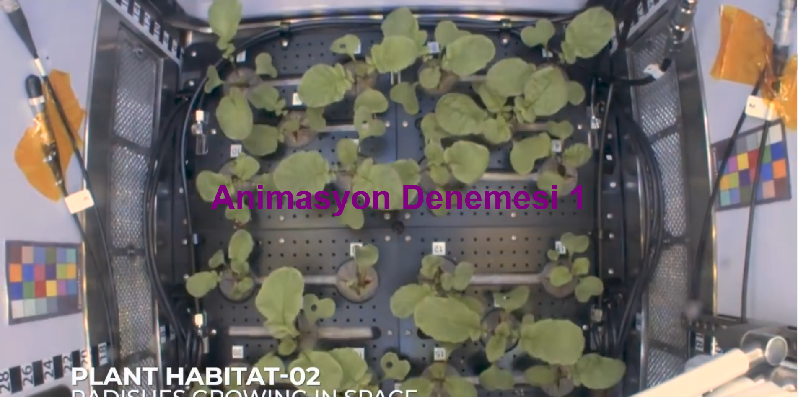

Achievements & Research
- Presented Paper on “Electronic signature and electronic certificate generation using complex numbers” ICPAM - Van 2022
- QSilver Certificate QTurkey 2023 QSilver Workshop
Portfolio
Dice Throw Game
Responsive Price Tables

Play videos on Scroll down!
About me Contact me!